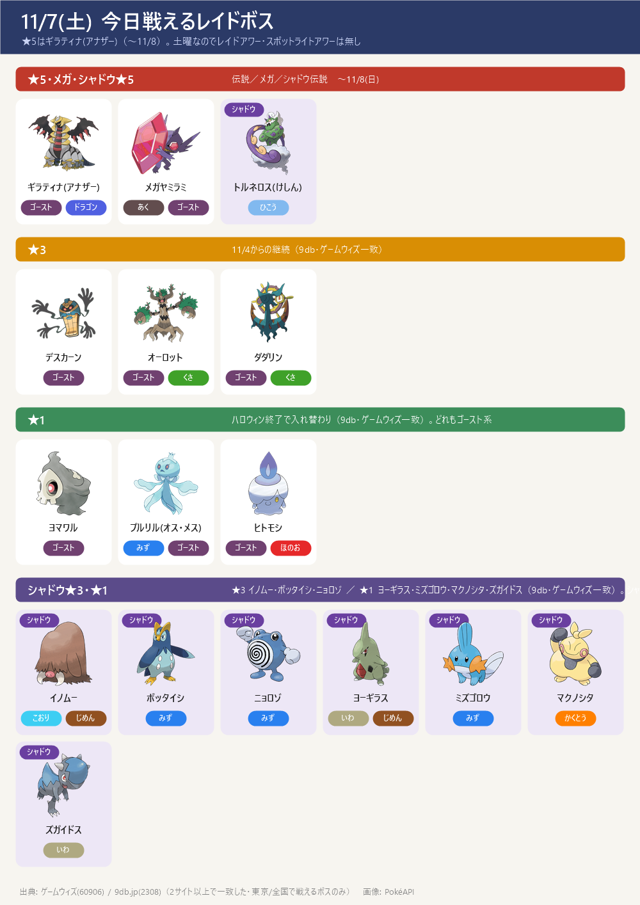
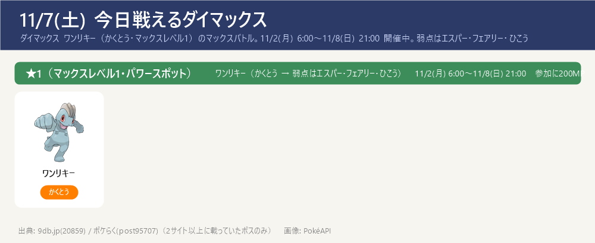
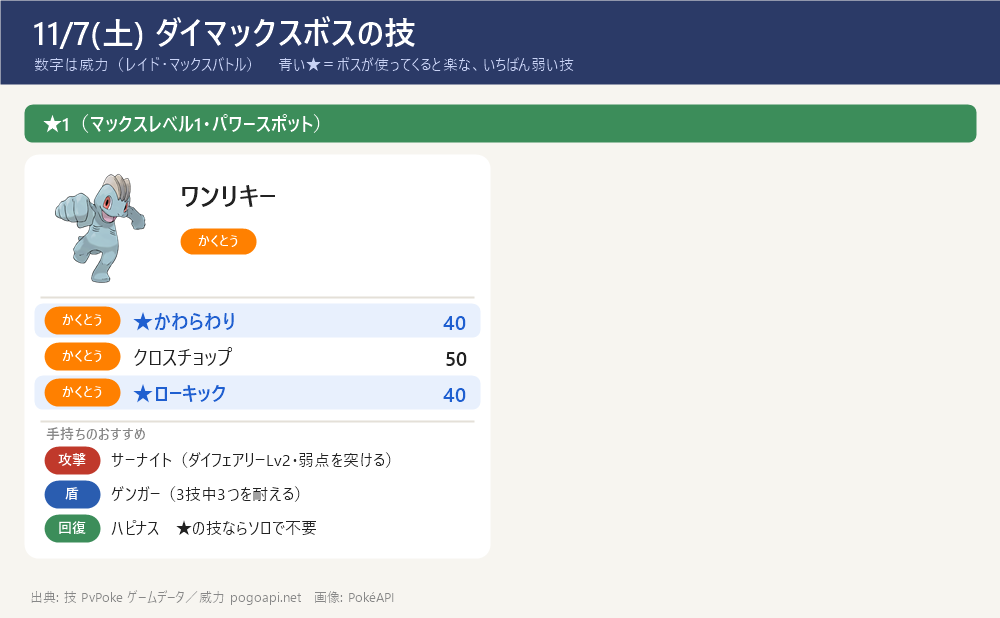

今日のポイント
- ★5はギラティナ(アナザー)（色違いあり・11/8(日)まで）。弱点：こおり・ゴースト・ドラゴン・あく・フェアリー技
- シャドウ★5はシャドウトルネロス(けしん)（ひこう → 弱点：でんき・こおり・いわ）。メガレイドはメガヤミラミ（あく・ゴースト → 弱点はフェアリーのみ）。どちらも11/8(日)まで
- マックスバトルは全国でダイマックスワンリキー（★1・マックスレベル1・かくとう）。弱点はエスパー・フェアリー・ひこう。11/8(日)21:00まで。参加に200MPとマックス粒子を使う。ねらいはカイリキー育成（11/14 ダイマックスディアルガ用）
- ★1レイドが入れ替わり：ヨマワル・プルリル(オス)・プルリル(メス)・ヒトモシ（ハロウィンのピカチュウ(ハット&ケープ)・ヤバチャ(リボン)は終了）
- 11/9(月)〜 ワイルドウィーク2026で、ザシアン／ザマゼンタが全国の伝説レイドに登場予定。伝説対策とボールの準備を
今日戦えるレイドボス
★5はギラティナ(アナザー)（〜11/8）。土曜なのでレイドアワー・スポットライトアワーは無し
- ★5 ギラティナ(アナザー)（ゴースト・ドラゴン）は 11/8(日) まで。弱点は こおり・ゴースト・ドラゴン・あく・フェアリー。色違いあり
- シャドウ★5 トルネロス(けしん)（ひこう）継続中。弱点は でんき・こおり・いわ。期間はサイト差（9db 11/4〜12/1／攻略大百科 11/4〜11/8・11/16〜12/1）→ ゲーム内で確認を
- メガヤミラミ（あく・ゴースト）→ 弱点はフェアリーのみ。11/8(日) 20:30 まで継続
- ★1はハロウィン(ピカチュウ(ハット&ケープ)・ヤバチャ(リボン))が終了し、ヨマワル・プルリル(オス/メス)・ヒトモシ に入れ替わった（いずれもゴースト系）

今日戦えるダイマックス
ダイマックス ワンリキー（かくとう・マックスレベル1）のマックスバトル。11/2(月) 6:00〜11/8(日) 21:00 開催中。弱点はエスパー・フェアリー・ひこう
- ダイマックス ワンリキー（かくとう・マックスレベル1）（9db・ポケらく一致）。バトルは 11/8(日) 21:00 まで。参加に200MP。マックスマンデー（現地勝利でふしぎなアメXL）は 11/2 で終了
- ワンリキーは かくとう → 弱点はエスパー・フェアリー・ひこう。マックスレベル1なのでソロでも倒しやすい。攻撃はダイサイコ（メタグロス等）・ダイフェアリー（サーナイト等）で弱点を突く。盾はゴーストタイプ（かくとう技が無効）
- ねらいはカイリキー育成：ワンリキー→ゴーリキー→カイリキー。カイリキー（カウンター）は 11/14(土) ダイマックス ディアルガ戦の主力アタッカー。アメを貯めておく
- 今パワースポットに出ている★1〜★3のまとめ：今出ているダイマックスまとめを開く（★1〜★3の一覧・この後の予定）
- 【各ボスのスペシャルアタック候補】（下のカード。数字はレイド・マックスバトルでの威力。★＝ボスが使ってくると楽な、いちばん弱い技（ボスと同じタイプの技は1.2倍で計算。こちらのポケモンとの相性は見ていない）。戦闘中に技名が出たら受け役を合わせる）


サカキ対策（シャドウゼクロム）：攻略ページへ（別ページ）
締め切り・やること：まとめページへ（別ページ）
この先の予定（タップで開閉）
- 11/8(日) 21:00 ダイマックス ワンリキー 終了／ 20:30〜21:00 ★5 ギラティナ(アナザー)・メガヤミラミ・シャドウ★5 トルネロス(けしん) 入れ替わり
- 11/9(月)〜11/15(日) ワイルドウィーク2026／ワイルドエリア2026グローバル。ザシアン(けんのおう)・ザマゼンタ(たてのおう)が全国の伝説レイドに登場（色違いあり）
- 11/9(月)・11/10(火) ザシアン／ザマゼンタのレイドアワー
- 11/11(水) 全国のマックスバトルがダイマックスレジスチル（★5）に入れ替わり／ 11/12(木) レジドラゴ（★5・初登場）／ 11/13(金) ラティアス・ラティオス（★5）
- 11/14(土) ダイマックスディアルガが全国のマックスバトルに登場（この日限定・★5）・メテノシャワー（しし座流星群）開始／ 11/15(日) パルキア（★5）／ 11/14〜15 キョダイマックス ジュラルドン（★6・初登場）
- 11/16(月)〜 クレセリア・ダークライの★5レイド／ メガジュペッタ（メガレイド）
サイトで違っていた点（タップで開閉）
- ダイマックス ワンリキーの★区分: ポケらくは「マックスレベル1」、9db は「★2」と表記。マックスバトルは★1・★3・★5・★6のみで★2は無い（まとめ『今出ているダイマックス』参照）ため、当ノートは★1（マックスレベル1）とした。※11/6のノートで「★2・かくとう」としていたのは誤りのため訂正（11/4のノートと同じ ★1 に統一）
- ダイマックス ニャスパー: 11/6のノートに★1で載せていたが、ポケらく・9db ともニャスパーのマックスマンデーは 11/23(月)〜11/29(日)。11/7時点では出ていないため当ノートには載せない（11/6の記載は誤り）
- ★1レイドの入れ替わり: ハロウィン2026(〜11/5)終了で、★1は ピカチュウ(ハット&ケープ)・ヤバチャ(リボン) → ヨマワル・プルリル(オス/メス)・ヒトモシ に替わった（9db・ゲームウィズ一致）
- ワイルドエリア2026仙台（宮城県・11/2〜11/8）限定: ★5 ザシアン(けんのおう)・ザマゼンタ(たてのおう)、★3 カイリキー(ジャケット)、マックスバトル キョダイマックスジュラルドン・ダイマックスディアルガ・ダイマックスパルキア。現地（宮城県内）限定で東京では戦えないため本編に入れていない
- ダイマックスボスの技候補はゲームデータ(PvPoke)から（おんがえし・やつあたりは除外）、威力は pogoapi.net
出典: pokemongo.gamewith.jp（出現中レイド 60906）／9db.jp/pokemongo（レイド 2308・マックスバトル 20859・開催イベント 4351）／pokemon.gamepedia.jp/go（攻略大百科）／pokemongo-raku.com（ポケらく・マックスバトル post95707）／pvpoke.com ゲームデータ（技候補）
画像: PokéAPI ／ 2サイト以上で一致した情報だけを載せています